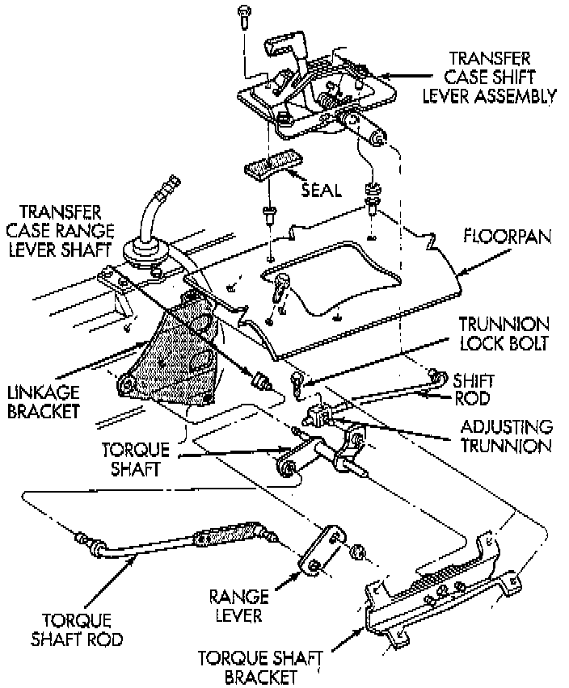

With NV242 Transfer Case

1. Shift transfer case into 4L position.
2. Raise vehicle.
3. Loosen lock bolt on adjusting trunnion.
4. Be sure linkage rod slides freely in trunnion. Clean rod and apply spray lube if necessary.
5. Verify that transfer case range lever is fully engaged in 4L position.
6. Tighten adjusting trunnion lock bolt.
7. Lower vehicle.